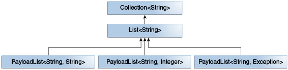
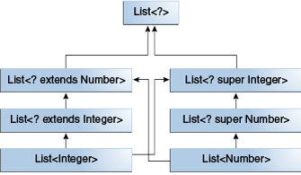

为什么使用泛型
简而言之，泛型可以使类型（类和接口）在定义类、接口和方法时进行参数化。与在方法定义的形参类似，类型参数化能让不同的输入使用同一份代码。差别在于，形参传入的是值，而类型参数化传入的是类型。
在使用泛型相比于直接使用 Object 有以下几个好处：
- 强制的类型检查：Java 编译器会对泛型代码进行强制类型检查，如果违反类型安全则会抛出错误。在编译阶段解决类型错误，能更有效的减少 Bug
- 消除类型强制转换：如果不使用泛型，则在进行代码编写是需要手动进行类型转换
- 允许程序员实现通用算法：通过泛型，程序员能在不同类型的集合上实现通用算法
泛型类型
泛型类型是指被参数化的类或接口，首先我们来看看一个简单的类：Box。其方法接收和返回的都是 Object 类型，因此可以除基本类型外的其他任何类型。这样也导致在编译期间不能进行任何校验。如果 Box 期望的是一个 Integer 类型，然而外部调用时，传入 String 类型，这就会在程序运行时抛出异常。
public class Box {
private Object object;
public void set(Object object) { this.object = object; }
public Object get() { return object; }
}
下面我们来看看泛型类型版本的 Box：
/**
* Generic version of the Box class.
* @param <T> the type of the value being boxed
*/
public class Box<T> {
// T stands for "Type"
private T t;
public void set(T t) { this.t = t; }
public T get() { return t; }
}
如上面代码所示，所有 Object 都被替换为了 T，T 是一个可以代表除基本类型外的所有类型：任意类、任意接口、任意数组类型甚至还可以是其他的类型参数（eg: List<T>）。
原始类型
原始类型是泛型类型没有类型参数的形式，例如上面的 Box<T> ，其原始类型就是 Box，但 非泛型类类型不是原始类型。原始类型的出现，只是为兼容 JDK5 之前的历史代码，比如：Collections。因此，将一个泛型类型赋值给原始类型是可以的：
Box<String> stringBox = new Box<>();
Box rawBox = stringBox; // OK
如果将原始类型赋值给泛型类型，编译器会报告一个警告：
Box rawBox = new Box(); // rawBox is a raw type of Box<T>
Box<Integer> intBox = rawBox; // warning: unchecked conversion
同样的，如果将一个原始类型参数传递给泛型方法，也会报告一个警告：
Box<String> stringBox = new Box<>();
Box rawBox = stringBox;
rawBox.set(8); // warning: unchecked invocation to set(T)
泛型方法
泛型方法与泛型类型类似，只不过泛型方法拥有自己的参数化类型，并且其作用域只限制在声明的方法中。泛型方法可以是静态的、非静态以及构造函数。泛型方法的声明必须在返回参数之前，即：
public class Util {
public static <K, V> boolean compare(Pair<K, V> p1, Pair<K, V> p2) {
return p1.getKey().equals(p2.getKey()) &&
p1.getValue().equals(p2.getValue());
}
}
public class Pair<K, V> {
private K key;
private V value;
//泛型方法
public Pair(K key, V value) {
this.key = key;
this.value = value;
}
//泛型方法
public void setKey(K key) { this.key = key; }
public void setValue(V value) { this.value = value; }
public K getKey() { return key; }
public V getValue() { return value; }
}
有界类型参数
当一个方法进行数字计算，并且想接收所有 Number 类型及其子类时，就需要用到有界类型参数。要声明一个有界类型参数，先列出该类型参数的名称，然后是 extends 关键字，然后是其上界，在这里是 Number。
在这里
extends即可以表示extends，也可以表示implements。
public <U extends Number> void inspect(U u){
System.out.println("T: " + t.getClass().getName());
System.out.println("U: " + u.getClass().getName());
}
在进行有界类型参数定义后，可使用在上界类型中定义的方法，在这里就可以调用 Number 内的所有方法，例如：intValue。
多上界
前面的示例说明了使用带单个界限的类型参数，但是类型参数可以具有多个界限：
<T extends B1 & B2 & B3>
有多个上界时，如果上界中包含类型（Class），则需要放在第一位。
泛型&继承&子类型
如 Java 语言规范所描述，只要类型兼容，就可以将一种类型的对象分配给另一种类型的对象。例如：我们可以将 Integer 对象赋值给 Object ，因为 Object 是 Integer 的父类之一。
Object someObject = new Object();
Integer someInteger = new Integer(10);
someObject = someInteger; // OK
用面向对象的术语来说，这是一种 is a 的关系。因为，Integer 是一种 Object ，这样的赋值也是允许的。同时，Integer 也是一种 Number 所以以下代码均正确：
public void someMethod(Number n) { /* ... */ }
someMethod(new Integer(10)); // OK
someMethod(new Double(10.1)); // OK
这种关系同样可以在泛型中使用：
Box<Number> box = new Box<Number>();
box.add(new Integer(10)); // OK
box.add(new Double(10.1)); // OK
但是在泛型方法上会有所不同，比如以下方法：
public void boxTest(Box<Number> n) { /* ... */ }
这个方法能够接收什么类型的参数呢？是否能够将 Box<Integer> 或者 Box<Double> 类型的对象传入呢？答案是 “否”，因为 Box<Integer> 和 Box<Double> 均不是 Box<Number> 的子类型。
这是一个常见的误解

不论 Integer 和 Number 是什么关系，Box<Integer> 和 Box<Number> 的共同父类均是 Object。
子类型
可以通过 extends 或者 implement 创建泛型类型的子类型，他们之间的关系只依赖与被 extends 或者被 implements。我们可以看看 Collections 的相关类型，ArrayList<E> 实现 List<E> 并且 List<E> 继承自 Collection<E>，所以，ArrayList<String> 是 List<String> 的子类型，List<String> 是 Collection<String> 的子类型。

现在我们需要自己定义一个 list 接口：PayloadList，它拥有一个可选的泛型类型 P：
interface PayloadList<E,P> extends List<E> {
void setPayload(int index, P val);
...
}
以下所有的 PayloadList 都是 List<String> 的子类型:
PayloadList<String,String>
PayloadList<String,Integer>
PayloadList<String,Exception>

通配符
在泛型中，使用 ? 做为通配符，代表未知类型。有界类型参数在上面已有介绍： List<? extends Number>。类似的，通配符可以没有上界，即 List<?>，这被称之为未知类型的List。这种未知类型的泛型在下面两个场景中很适用：
- 泛型类型中只使用 Object 中声明的方法
- 泛型类型中的代码不依赖与类型参数，例如：
List.size、List.clear
另外，通配符还可声明类型参数的下界：List<? super Integer>。
通配符&子类型
当有了通配符后，泛型的继承关系又有新的规则。尽管 Integer 是 Number 的子类型，但 List<Integer> 不是 List<Number> 的子类型，实际上，这两种类型无关。 List<Number> 和 List<Integer> 的公共父类是 List<?>。

List<? extends Integer> intList = new ArrayList<>();
List<? extends Number> numList = intList; // OK. List<? extends Integer> is a subtype of List<? extends Number>
因为 Integer 是 Number 的子类型，并且 numList 是 Number 对象的列表，所以 intList （一个 Integer 对象的列表）和 numList 之间存在关系。下图显示了使用上下界通配符声明的几个 List 类之间的关系。

类型擦除
Java 语言引入了泛型，以在编译时提供更严格的类型检查并支持泛型编程。为实现泛型 Java 编译器会进行类型擦除：
- 替换所有类型参数为他们的上界或者
Object，因此，字节码仅包含普通的类，接口和方法。 - 必要时插入类型转换，以保持类型安全。
- 生成桥接方法以在扩展的泛型类型中保留多态。
类型擦除可确保不会为参数化类型创建新的类；因此，泛型不会产生运行时开销。
泛型类型的擦除
在类型擦除过程中，Java 编译器将擦除所有类型参数，如果类型参数是有界的，则将每个参数替换为其第一个边界；如果类型参数是无界的，则将其替换为 Object。
public class Node<T> {
private T data;
private Node<T> next;
public Node(T data, Node<T> next) {
this.data = data;
this.next = next;
}
public T getData() { return data; }
// ...
}
由于 T 是无界的，所以其类型擦除后的代码为：
public class Node {
private Object data;
private Node next;
public Node(Object data, Node next) {
this.data = data;
this.next = next;
}
public Object getData() { return data; }
// ...
}
而对于以下代码的擦除又不一样：
public class Node<T extends Comparable<T>> {
private T data;
private Node<T> next;
public Node(T data, Node<T> next) {
this.data = data;
this.next = next;
}
public T getData() { return data; }
// ...
}
擦除后：
public class Node {
private Comparable data;
private Node next;
public Node(Comparable data, Node next) {
this.data = data;
this.next = next;
}
public Comparable getData() { return data; }
// ...
}
泛型方法擦除
泛型方法的擦除规则和泛型类型的擦除规则类似：
// Counts the number of occurrences of elem in anArray.
public static <T> int count(T[] anArray, T elem) {
int cnt = 0;
for (T e : anArray)
if (e.equals(elem))
++cnt;
return cnt;
}
public static <T extends Shape> void draw(T shape) { /* ... */ }
擦除后：
public static int count(Object[] anArray, Object elem) {
int cnt = 0;
for (Object e : anArray)
if (e.equals(elem))
++cnt;
return cnt;
}
public static void draw(Shape shape) { /* ... */ }
桥接方法
对于以下两个类：
public class Node<T> {
public T data;
public Node(T data) { this.data = data; }
public void setData(T data) {
System.out.println("Node.setData");
this.data = data;
}
}
public class MyNode extends Node<Integer> {
public MyNode(Integer data) { super(data); }
public void setData(Integer data) {
System.out.println("MyNode.setData");
super.setData(data);
}
}
类型擦除：
public class Node {
public Object data;
public Node(Object data) { this.data = data; }
public void setData(Object data) {
System.out.println("Node.setData");
this.data = data;
}
}
public class MyNode extends Node {
public MyNode(Integer data) { super(data); }
public void setData(Integer data) {
System.out.println("MyNode.setData");
super.setData(data);
}
}
在类型擦除后，方法的签名不匹配，导致重写的方法不生效，Node.setData(T) 变成了 Node.setData(Object)。为解决这个问题，Java 编译器在子类型中生成桥接方法，对于 MyNode 其生成的方法如下：
class MyNode extends Node {
// Bridge method generated by the compiler
//
public void setData(Object data) {
setData((Integer) data);
}
public void setData(Integer data) {
System.out.println("MyNode.setData");
super.setData(data);
}
// ...
}
这样，在类型擦除之后，MyNode 具有与 Node 的 setData(Object) 方法相同的方法签名的桥接方法，并将其委托给的 setData(Integer) 方法。
未擦除的泛型
类型擦除只局限于 泛型类型 和 泛型方法，对于 MyNode 这种非泛型类型，泛型信息并不会擦除。在 MyNode 内同样可以通过反射获取到它父类的泛型信息。
public static void main(String[] args) throws Exception {
ParameterizedTypeImpl superclass = (ParameterizedTypeImpl) MyNode.class.getGenericSuperclass();
System.out.println(Arrays.toString(superclass.getActualTypeArguments()));//[class java.lang.Integer]
}